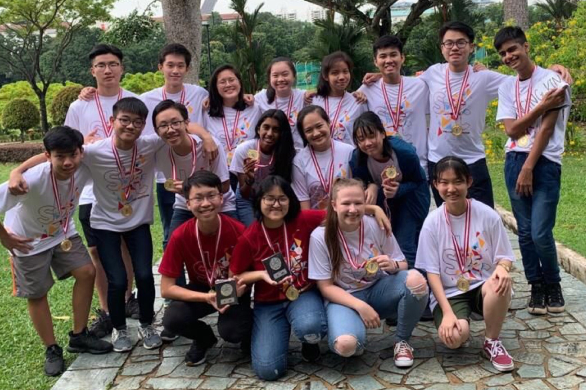

Youth Faculty 17: Influence of Political Indeologies on Education Systems
Under Youth Assembly 1: National Education
Hey! We are Youth Faculty 17, and the issue we are discussing is the Influence of Political Ideologies on Education Systems. To start off, what are political ideologies and why do they influence our education systems? Political ideologies are defined as a certain set of ethical ideals and principles that explains how a society should function, and offer some political and cultural blueprint for a certain social order. Examples of political ideologies are communism and democracy. Political ideologies influence educational systems because it is a way to develop the country' citizens values based on the values that the government subscribes to, in order to control the nation, and nurture future leaders. Political ideologies especially influence the educational system as youth are more impressionable and vulnerable to such influences. These political idealogies influence education systems in two aspects: firstly content, such as information available in school textbooks and the classroom dynamic, such as a socratic verdus didactic learning environment.
The detrimental impacts of political ideologies on educational systems include citizens having a pinhole vision as their thoughts are being limited due to not being exposed to certain information, people having a warped view on right and wrong (such as in extreme communism) and inculcates certain values in students that may be negative such as speaking up less and not questioning what they learn. Most of all, clashes between different political ideologies, ie. ideological warfare reduces international collaboration and reduces the efficiency of transational collaboration as people may not be able to settle on common goals due to their education influenced by different political ideologies.
To solve this issue, governments can change their standpoint and admit to their faults if they have hidden or are withholding any information from their citizens. Additionally, they can also increase students' exposure to other countries, such as through cultural exchanges to broaden the students' worldviews through real life experiences. Ctizens can use technology to access more information, and students can speak up in class to raise different points of view and not solely agree on what is being thought. Schools can also implement thinking programmes to equip students with the skills to differentiate for themselves what is right and wrong, and enable the learning about political ideologies to let students know about different political ideologies and broaden their horizons, while ensuring teachers remain objective.
The Lens
Here is our Lens Video, where we took on different roles to portray the problems and its impacts in the real world context. We also used it to illustrate what possible solutions there can be to the detrimental impacts of the Influence of political ideologies on education systems we have identified. We hope you will enjoy the video :)
Exhibition
Our exhibition boards was a conclusion to all our discussions, and exhibited all of our research that we had cumulatively gathered over the past few days. The content of the 5 boards was organised as such:
- Title and introduction to our issue
- Causes
- Impacts
- Examples of the issue in relation to the real world context
- Solutions
(here we would include your exhibition boards, hopefully you left it in ops room)
thank you
The 25th SLC has been a great experience that we will miss fondly. Thank you to everyone who helped to make it happen, and we will cherish the fun we had alongside the knowledge we have gained for a long time to come. We hope that you have also learnt something from our research too :”) SLC 2019 out